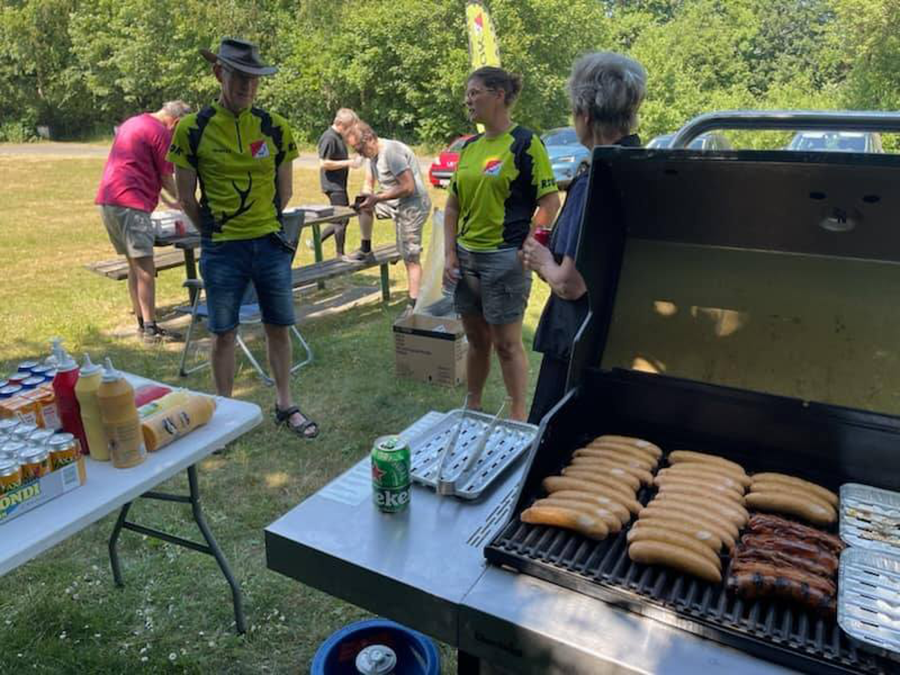
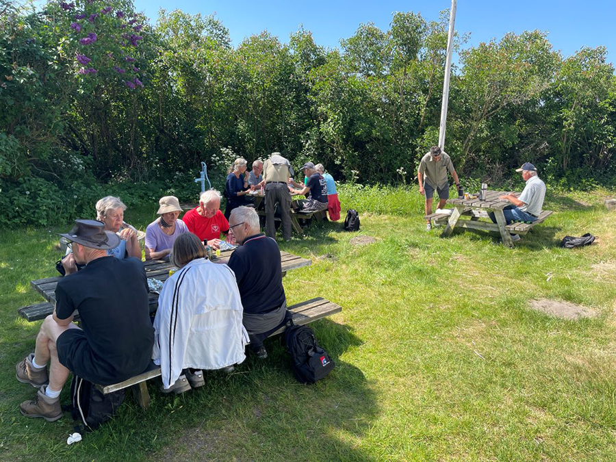
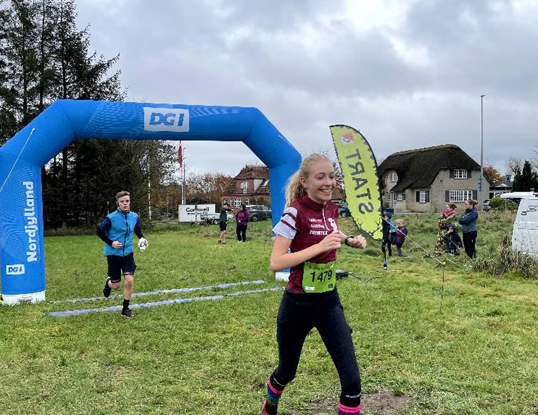

Fællesmiddag i RSOK
Hver tirsdag afsluttes klubbens træning med en fællesmiddag, der samler medlemmerne om et godt måltid og hyggeligt
samvær. Efter dagens orienteringsaktiviteter er middagen en oplagt mulighed for at dele oplevelser fra skoven, lære nye
ansigter at kende og styrke båndene i klubben. Fællesmiddagen er en værdsat tradition, der skaber en varm og
inkluderende atmosfære, hvor alle føler sig som en del af fællesskabet.

RSOK til Midsommer Lounge
Skørping Midsommer Lounge er et socialt event, der fylder parken ved Privathospitalet med glade mennesker, afslappet
lounge-stemning og chill-out musik. Gæsterne kan nyde lækker mad og drikke fra lokale erhvervsdrivende i hyggelige
omgivelser. Rold Skov Orienteringsklub deltager med små aktiviteter, der giver en smagsprøve på orienteringsløb og
muligheden for at møde klubben i en uformel atmosfære. Overskuddet fra arrangementets barsalg går til projektet Aktiv
Center Rold Skov, der styrker fællesskabet i lokalområdet.

RSOK til byfest i Skørping
Rold Skov Orienteringsklub er en fast del af den årlige byfest i Skørping, hvor vi inviterer både børn og voksne til at
prøve kræfter med orienteringsløb. Under "Aktiv Torsdag" tilbyder vi sjove og lærerige aktiviteter, hvor deltagerne kan
få en introduktion til kort og kompas, mens de løser spændende baner i nærområdet. Byfesten er en fantastisk mulighed
for at opleve glæden ved orienteringsløb, samtidig med at man nyder den livlige og festlige stemning i byen.
Bliv en del af fællesskabet
Rold Skov Orienteringsklub er mere end en klub – det er et sted, hvor natur, motion og fællesskab går hånd i hånd.
Uanset om du møder os til byfesten i Skørping, nyder stemningen ved Midsommer Lounge, eller deler et måltid til vores
fællesmiddag, er du altid velkommen til at blive en del af vores engagerede fællesskab. Vi glæder os til at introducere
dig til orienteringsløbets mange glæder og dele uforglemmelige oplevelser i noget af Danmarks smukkeste natur. Kom og
vær med – vi har plads til alle!
Tilmeld dig fællesskabet